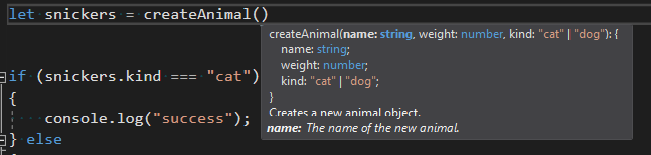

JsDoc support
Programs written in JavaScript and TypeScript can be annotated with (JsDoc comments)[http://usejsdoc.org/index.html] to give type information and quickinfo descriptions of identifiers.
In the following example, the text between the opening /** and closing */ are considered JsDoc comments.
/**
* Creates a new animal object.
* @param {string} name The name of the new animal.
* @param {number} weight
* @param {"cat" | "dog"} kind
* @return {{name: string, weight: number, kind: "cat" | "dog"}} A brand new animal!
*/
function createAnimal(name, weight, kind)
{
// ...
}
As you can see, we can prefix sections in JsDoc with terms such as @param and @return to describe the behavior of the createAnimal function.
In JsDoc, terms beginning with @ have special meanings, and are called tags. The text between curly braces are descriptions of types,
which can be used by the developer to check that they are using a variable correctly — they should precede the name of the construct being described, if applicable.
In the example above, knowing that weight is a number can inform the developer to avoid calling weight.length.
Moreover, if the result of createAnimal is assigned to a variable, the return type of createAnimal propagates to the assigned value.
The type annotations supported include both jsdoc and TypeScript syntax. For example, kind is described as a union of string-literals, and the return type is an object containing each of the parameters as properties. We give details in (section link?) below.
Finally, the text spans before the first tag and after parameter names are descriptions, which shows up as part of quickinfo anytime you hover over a construct that is documented

and while filling in the paramaters in a function call.

Different constructs in JavaScript can use different forms of documentation, as described below.
Visual Studio offers a rich editing experience inside JsDoc comments. The editor offers auto-completion on tags, names, and types as well as auto-indentation. You can use F12 and Shift+F12 for Go-to-definition and Find-All-References, respectively, as well hovering for quickinfo.
Supported Tags
Any tag may be used for documentation, but Visual Studio treats some tags specially to improve the editor's ability to catch errors and help with refactoring. The following tags are handled specially. Each tag is followed by a description and example.
@param— describes a parameter to a function. Type annotations and descriptions are optional.
/**
* Repeats a string a certain number of times.
* Also: the future is bright and consists of native string repetition:
* https://developer.mozilla.org/en-US/docs/Web/JavaScript/Reference/Global_Objects/String/repeat
*
* @param {string} string String to repeat
* @param {number} times Number of times to repeat string. Integer.
* @see http://jsperf.com/string-repeater/2
*/
function repeatString(string, times) {
if (times === 1) {
return string;
}
if (times < 0) { throw new Error(); }
var repeated = '';
while (times) {
if (times & 1) {
repeated += string;
}
if (times >>= 1) {
string += string;
}
}
return repeated;
}
@return— describes the return value of a function. Type annotations and descriptions are optional.
/**
* Determine if the string ends with the specified substring.
*
* @param {string} haystack String to search in
* @param {string} needle String to search for
* @return {boolean}
*/
function endsWith(haystack, needle) {
return haystack.slice(-needle.length) === needle;
}
@class— tells Visual Studio to treat the next function as a constructor. (Only available in JavaScript files)
var Cell = /** @class */ (function () {
function Cell() {
}
return Cell;
}());
@augmentsand@extends— if the next construct is a class declaration, specifies which class the upcoming declaration extends. Note that@augmentsand@extendsare synonyms. Like the@classtag above, these tags are useful with pre-ES6 javacsript, as in the following example:
The following advanced example shows how to use @augments to instantiate a type parameter.
// @Filename: declarations.d.ts
declare class Thing<T> {
mine: T;
}
// @Filename: dummy.js
/**
* @augments {Thing<string>}
*/
class MyStringThing extends Thing {
constructor() {
// x is a string!
var x = this.mine;
}
}
@template— used to specify type parameters for the following function (c.f. generic programming)
/**
* @param {T} a
* @template T
*/
function f(a) {
return () => a
}
let n = f(1)();
@type— declares the type of the next construct:
/** @type {{key: "value"}} */
var x = JSON.parse(JSON.stringify({key: "value"}));
@typedef— Typedef tags can be used to declare types referenced in other JsDoc comments. If a type is specified inline (in the same style as@param), that describes the shape of the@typedef'd name. Alternatively, A JsDoc beginning with a@typedeftag and name can be followed by@propertyand@membertags to describe the shape of the named type.
/**
* @typedef {{foo: number}} Foo1
*/
/**
* @typedef Foo2
* @property {number} foo
*/
/** @type {Foo1} */
const x = { foo: 0 };
@propertyand@member— used to describe properties as part of a@typedeftype declaration. See above for an example.
Type Syntax
Visual Studio supports both JsDoc and TypeScript syntax for type annotations. Since TypeScript has a more expressive type system, we recommend using the latter.
Generic Programming
JsDoc Scaffolding Support
If you would like to add JsDoc comments to an existing javascript construct, typing /** in front of a construct in Visual Studio will trigger scaffolding generation, which will stub out
JsDoc for the next construct:
Scaffolding-generation is supported for the following constructs:
- function declarations
- method declarations
- constructor declarations
- method signatures
- variable statements
- most property assignments — module import and export statements are excluded
Bugs
Known issues and feature suggestions for JSDoc-related issues are tracked here. If you run into an issue with JsDoc, please first search for and upvote an existing issue. If none exists, please file a new issue.